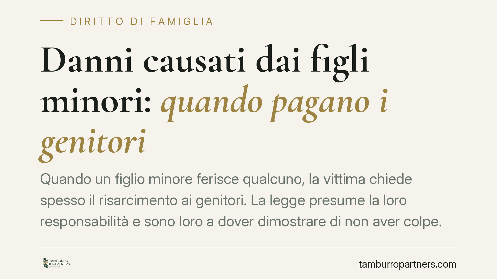

Danni causati dai figli minori: quando pagano i genitori
Quando un figlio minore ferisce qualcuno, la vittima chiede spesso il risarcimento ai genitori. La legge presume la loro responsabilità e sono loro a dover dimostrare di non aver colpe. Un principio che incide su ogni famiglia e che merita di essere compreso prima che il problema si presenti concretamente.

Il caso: un gesto del minore, un danno reale
Un bambino spinge un compagno che cade e si frattura un braccio. Un adolescente danneggia un'auto o ferisce un coetaneo durante una lite. In tutti questi casi la vittima cerca chi risponda economicamente del danno. E la risposta, quasi sempre, chiama in causa i genitori.
Il minore, di regola, non ha un patrimonio proprio. La legge sposta quindi l'attenzione su chi ha il dovere di vigilarlo ed educarlo.
Inquadramento normativo
La norma di riferimento è l'art. 2048 del codice civile. Il primo comma stabilisce che il padre e la madre sono responsabili del danno cagionato dal fatto illecito dei figli minori che abitano con loro.
Si tratta di una responsabilità per colpa presunta. In pratica, la legge dà per scontato che il danno sia derivato da una mancata vigilanza (la cosiddetta *culpa in vigilando*) o da un difetto di educazione (*culpa in educando*). Il genitore, cioè, è considerato in colpa fino a prova contraria.
L'ultimo comma dell'art. 2048 c.c. indica l'unica via d'uscita: i genitori sono liberati dalla responsabilità solo se provano di non aver potuto impedire il fatto. È l'onere della prova, e grava interamente su di loro.
La Corte di Cassazione ha chiarito nel tempo che questa prova è particolarmente rigorosa. Non basta dimostrare l'impossibilità materiale di controllare il figlio nel singolo momento: occorre provare di avere impartito un'educazione adeguata e di aver esercitato una vigilanza coerente con l'età, il carattere e l'indole del minore. Più il figlio è vicino alla maggiore età, più conta la prova di una buona educazione rispetto a quella della vigilanza continua.
Implicazioni pratiche per le famiglie
La conseguenza è concreta: quando un figlio minore causa un danno, i genitori non partono da una posizione neutra. Devono attivarsi per dimostrare la propria assenza di colpa, altrimenti rispondono con il proprio patrimonio.
Alcuni punti che generano frequenti equivoci.
Convivenza. La responsabilità dell'art. 2048 c.c. presuppone che il figlio abiti con i genitori. In caso di separazione o affido, occorre valutare con quale genitore il minore convive stabilmente e come sono distribuiti i compiti di cura.
Età del minore. Anche un bambino molto piccolo può causare un danno risarcibile: la sua incapacità di intendere non elimina la responsabilità dei genitori, ma sposta il fondamento sul dovere di sorveglianza.
Danno a scuola o durante attività organizzate. Se il fatto avviene mentre il minore è affidato a un insegnante o a un istruttore, entra in gioco anche la responsabilità di chi aveva in quel momento la vigilanza (art. 2048, secondo comma). Le due responsabilità possono concorrere.
Assicurazione. Molte polizze per la casa o polizze specifiche contengono una garanzia di "responsabilità civile del capofamiglia" che copre anche i danni causati dai figli. Verificarne l'esistenza e i massimali è spesso decisivo.
Cosa fare in concreto
- Documenta subito l'accaduto. Raccogli testimonianze, referti, eventuali immagini. La ricostruzione precisa dei fatti è la base di ogni difesa.
- Verifica le tue coperture assicurative. Controlla se una polizza già attiva include la responsabilità civile per i danni causati dai figli e leggine con attenzione esclusioni e massimali.
- Non rilasciare dichiarazioni o riconoscimenti affrettati. Ammettere responsabilità o quantificare importi senza una valutazione tecnica può pregiudicare la tua posizione.
- Ricostruisci il contesto di vigilanza ed educazione. Se il fatto è avvenuto in ambito scolastico o sportivo, individua chi aveva in quel momento la sorveglianza del minore.
- Rivolgiti a un legale prima di trattare con la controparte. Consigliamo di far valutare la posizione da un professionista prima di aprire qualsiasi negoziazione con la vittima o con la sua assicurazione.
---
*Contributo informativo a cura di Tamburro & Partners - Avv. Giuseppe Tamburro. Non costituisce parere legale.*
Ogni famiglia ha il suo equilibrio.
Separazione, divorzio, affidamento, assegno: se vuoi un confronto riservato su una specifica situazione, scrivi allo studio. Ti rispondiamo entro un giorno lavorativo.